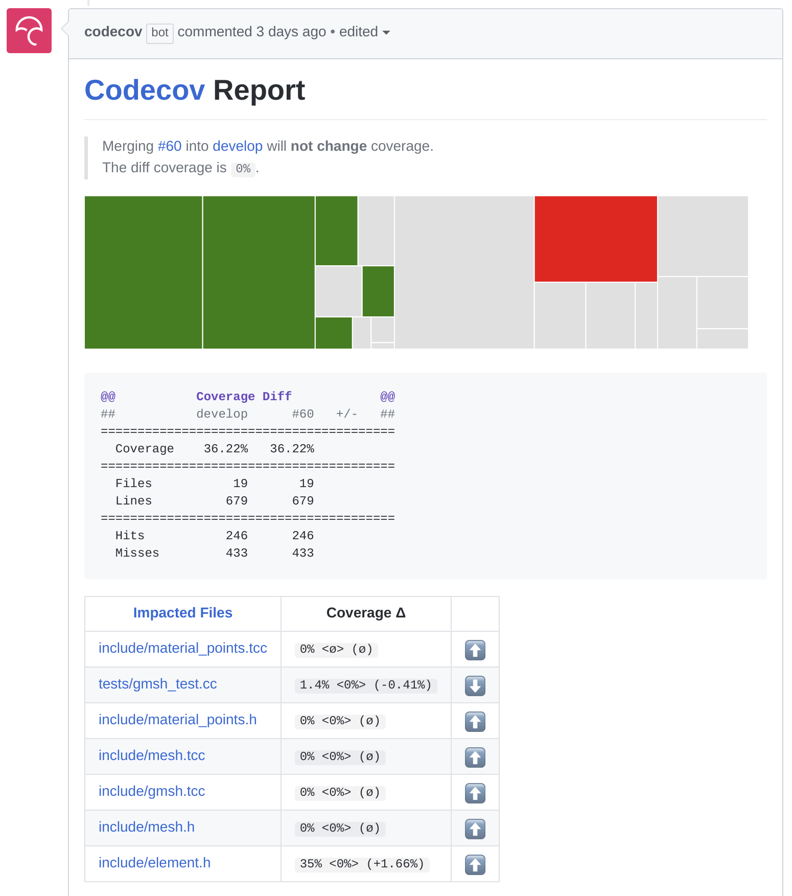
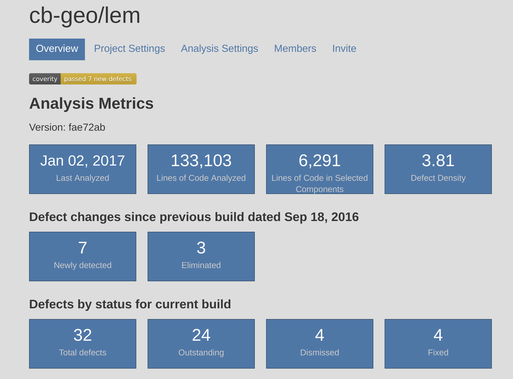
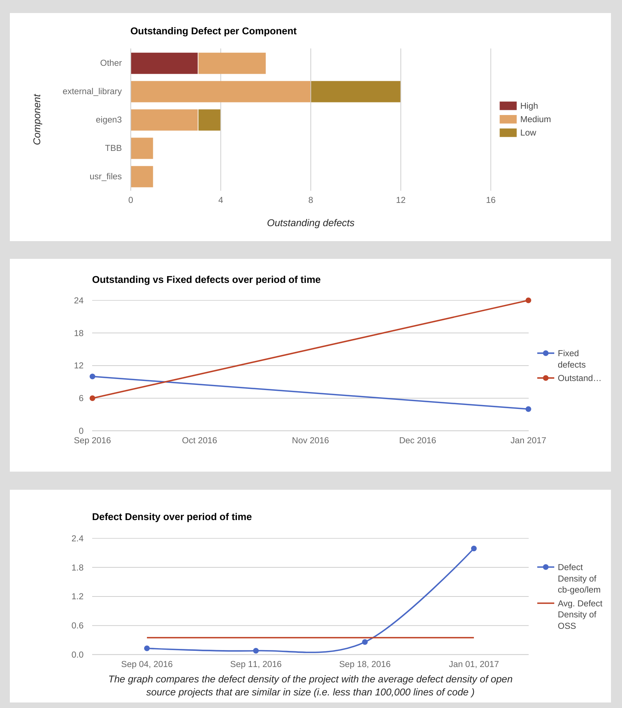
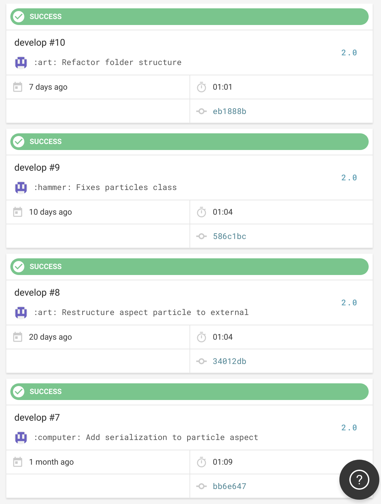

Our journey towards CI and HPC
TravisCI, CircleCI, Jenkins and containers
Jeffrey Salmond js947@cam.ac.uk,
Krishna Kumar kks32@cam.ac.uk,
University of Cambridge


Imperial College London
10 November 2017.
Cambridge-Berkeley computational geomechanics
- Lattice-Boltzmann + Discrete Element Method
- Finite Element Method - Thermo-Hydro Mechanical Coupling
- Material Point Method
- Lattice Element Method

Research Computing @Cambridge
- Cambridge Service for Data-Driven Discovery (CSD3)
- Wilkes-2
360 NVidia P100 GPUs - PETA4
24576 cores Intel Skylake +
342 nodes Intel Xeon Phi (Knights Landing) - Openstack private cloud infrastructure
- Wilkes-2


Research Software Engineering @Cambridge
- Partner with researchers at Cambridge and other Universities
- Help researchers make better use of our compute resources
- Spread information about best practices
"software carpentry" "reproducible research"

Git hosting

GitLab has integrated CI!
Repositories are auto-mirrored between GitHub and GitLab
Issues / PRs are not synced after first mirror
What do we want to test with Continous Integration?
- Builds: Multiple compilers and optimisations
- Unit testing
- Benchmarks
- Static analysis
- Coverage analysis
- Formatting - clangformat / astyle
- Documentation


Unit testing
- Test every function
- Test for all possible values
- C++ unit testing frameworks:
- Catch
- Google mock test
- Boost unit test
All tests passed (36 assertions in 3 test cases)


Code coverage
# Codecov
- compiler: gcc
env:
- SPECIAL=codecoverage
addons:
apt:
sources: ['ubuntu-toolchain-r-test']
packages: ['g++-5', 'ruby']
before_script:
- wget lcov_1.11.orig.tar.gz
- tar xf lcov_1.11.orig.tar.gz
- sudo make -C lcov-1.11/ install
after_success:
- rm -rf ./* && cmake .. -DENABLE_COVERAGE=On
- make clean && make
- ./felib
- ./felibtest
- make gcov
- make lcov
- bash <(curl -s https://codecov.io/bash) -X gcov

Coverage tools:
codecov.io and coversall
Static analysis


Static analysis tools:
TravisCI: Build matrix for different compilers


Travis allows for Caching repos and directories
Installing multiple versions of libraries is complicated!
Challenges of running CI on HPC
- Job schedulers
Docker containers
- Automates the deployment of applications by packaging an application with all of its dependencies into software containers.
- Docker containers wrap up a piece of software in a complete filesystem that contains everything it needs to run: code, runtime, system tools, system libraries – anything you can install on a server.
- This guarantees that it will always run the same - Research reproducibility

CircleCI: Custom Docker containers
version: 2
jobs:
build:
working_directory: /home/cbgeo/research/
docker:
- image: quay.io/cbgeo/mpm3d
steps:
- checkout
# GCC 6.3
- run:
name: GCC-6 build
command: |
mkdir -p build
[ "$(ls -A build)" ] && rm -rf build/*
cd build
cmake -DCMAKE_BUILD_TYPE=Release \
-DCMAKE_CXX_COMPILER=g++ ..
make -j8
ctest -VV

Custom docker images
Quay.io / GitLab / Docker hub container registry
Challenges of running Docker on HPC environments
- docker daemon runs as root
- users inside a docker container assume root level privilege
- makes mounting filesystems in a secure way impossible
Singularity containers
- Compatible with (many) docker images
- Allows access to external filesystems

Vision for CI in HPCS
- Integrated CI using YAML-like configuration
- Containers and Orchestration
- Continuous delivery and deployment
- Unified reporting format